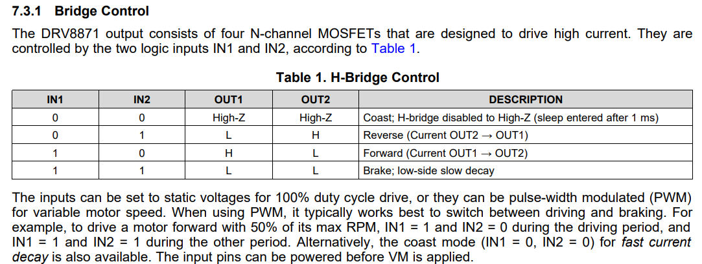

Motor Control
Detail code for MotorControl.hpp & MotorControl.cpp
This section includes the control of the DC motor (Left & right wheel) with the encoder setup to compute the RPM of the DC motor, servo motor (Front wheel).
DC Motor
Setting up the PWM Channel(s) for DC motor
For PWM channel, Setting as below. PWM: Frequency, Resolution, Dutycycle Motor: ID, IN1 Channel, IN2 Channel, Speed
namespace MotorControl {
// Configuration of DC Motor (Side Wheels)
struct DCMotor
{
// PWM Configuration
const uint16_t PWMFrequency = 2000;
const uint8_t PWMResolution = 12;
uint16_t PWMDuty = 0;
uint8_t MotorID = 0; // ID = 1 (Left), = 2 (Right)
uint8_t PWMChannelIN1 =
0; // ensure the PWM channel for different motor is not the same
uint8_t PWMChannelIN2 = 0;
// Adjustable Parameter
uint16_t Speed = 0; // Init set to 0
}}
The use of extern
To give them external linkage and make them accessible across multiple translation units, extern must be explicitly used in their declarations in all files, including the one where they are defined.
In MotorControl.hpp,
In MotorControl.cpp,
Global motor instances
Functions for controlling DC motors
namespace DCMotorControl {
/*Initialization of PWM channels for DC Motors*/
void Init();
void TurnClockwise(DCMotor& Motor);
void TurnAntiClockwise(DCMotor& Motor);
void Stop(DCMotor& Motor);
};
void DCMotorControl::Init()
void MotorControl::DCMotorControl::Init()
{
// Setup the Motor ID to the struct
LeftWheel.MotorID = 1;
LeftWheel.PWMChannelIN1 = 1;
LeftWheel.PWMChannelIN2 = 2;
RightWheel.MotorID = 2;
RightWheel.PWMChannelIN1 = 3;
RightWheel.PWMChannelIN2 = 4;
// Setup PWM channels for DC Motors (Side Wheels)
ledcAttachChannel(Pinout::LeftMotorIn1,
LeftWheel.PWMFrequency,
LeftWheel.PWMResolution,
LeftWheel.PWMChannelIN1);
ledcAttachChannel(Pinout::LeftMotorIn2,
LeftWheel.PWMFrequency,
LeftWheel.PWMResolution,
LeftWheel.PWMChannelIN2);
ledcAttachChannel(Pinout::RightMotorIn1,
RightWheel.PWMFrequency,
RightWheel.PWMResolution,
RightWheel.PWMChannelIN1);
ledcAttachChannel(Pinout::RightMotorIn2,
RightWheel.PWMFrequency,
RightWheel.PWMResolution,
RightWheel.PWMChannelIN2);
// Set all the PWM Channels' Dutycycle to 0
ledcWriteChannel(LeftWheel.PWMChannelIN1, 0);
ledcWriteChannel(LeftWheel.PWMChannelIN2, 0);
ledcWriteChannel(RightWheel.PWMChannelIN1, 0);
ledcWriteChannel(RightWheel.PWMChannelIN2, 0);
};
Spinning the DC motor
Refer to the datasheet of the motor sheet (Motor driver)
Check out URL: DRV8871 3.6-A Brushed DC Motor Driver With Internal Current Sense (PWM Control) for the latest docs.

void MotorControl::DCMotorControl::TurnClockwise(MotorControl::DCMotor& Motor)
@brief Spin the motor clockwise, package the function in struct dependent.
@param Motor (MotorControl::DCMotor& Motor) (i.e. LeftWheel / RightWheel)
void MotorControl::DCMotorControl::TurnClockwise(MotorControl::DCMotor& Motor)
{
ledcWriteChannel(Motor.PWMChannelIN1, Motor.Speed);
ledcWriteChannel(Motor.PWMChannelIN2, 0);
};
void MotorControl::DCMotorControl::TurnAntiClockwise(MotorControl::DCMotor& Motor)
@brief Spin the motor anti-clockwise, package the function in struct dependent.
@param Motor (MotorControl::DCMotor& Motor) (i.e. LeftWheel / RightWheel)
void MotorControl::DCMotorControl::TurnAntiClockwise(MotorControl::DCMotor& Motor)
{
ledcWriteChannel(Motor.PWMChannelIN1, 0);
ledcWriteChannel(Motor.PWMChannelIN2, Motor.Speed);
};
void MotorControl::DCMotorControl::Stop(MotorControl::DCMotor& Motor)
@brief Stop the motor, package the function in struct dependent.
@param Motor (MotorControl::DCMotor& Motor) (i.e. LeftWheel / RightWheel)
Refer to the datasheet, to stop the DC motor, both of IN1 and IN2 should be pull-high (100% dutycycle, i.e. 4096 for 12-bit PWM resolution)
void MotorControl::DCMotorControl::Stop(MotorControl::DCMotor& Motor)
{
ledcWriteChannel(Motor.PWMChannelIN1, 4096);
ledcWriteChannel(Motor.PWMChannelIN2, 4096);
};
Encoder for DC Motor
Setting up the encoder for DC motor (n20)

- The gearbox used on the car is highlight in red, and the rpm of the motor (without any payload) is 300.
Creating struct for encoder
To find the rpm of the motor, encoder with A and B is used to detect the rotation of the magnet attaches to the motor.
In MotorControl.hpp,
// Create a struct to handle 2 motors encoder
struct Encoder_t
{
int pinAState;
int pinBState;
int Encoder_A;
int Encoder_B;
};
Constant for encoder
- encoderResolution is tested by full speed (100% dutycycle) and count the pulses. Since the rpm of the motor without payload is 300, the pulse per rotation of the motor can be found.
/*Constants for Encoder
Find out the encoder resolution by yourself */
const int encoderResolution = 320; // Number of pulses per revolution
const unsigned long interval = 50; // Time interval in milliseconds 50ms
In MotorControl.cpp
RPM Counter
Setup of the RPM counter struct
In MotorControl.hpp,
/*Encoder to RPM Function and Settings
Creating RPMCounter_t for 2 Wheel Setting
*/
struct RPMCounter_t
{
volatile int encoderPulses;
unsigned long previousMillis;
volatile float rpm;
};
extern RPMCounter_t LeftWheelRPM;
extern RPMCounter_t RightWheelRPM;
Functions for encoder
- Interrupts are used for the triggering of the encoder pin
namespace Encoder {
/*Interrupt for the encoder for both left & right wheel*/
void handleLeftEncoderInterrupt();
void handleRightEncoderInterrupt();
void Init();
void RPMCounterFromEncoder(RPMCounter_t& Counter);
};
Initalization of RPM counter
In MotorControl.cpp,
/*Init the Enocoder related Variables before the task starts*/
Encoder_t EncoderLeft = { 0,
0,
Pinout::LeftMotorEncoderA,
Pinout::LeftMotorEncoderB };
Encoder_t EncoderRight = { 0,
0,
Pinout::RightMotorEncoderA,
Pinout::RightMotorEncoderB };
/*Define 2 Sets of Variables using RPMCounter_t for 2 Wheel
Init the RPM related Variables before the task starts */
RPMCounter_t LeftWheelRPM = { 0, 0, 0 };
RPMCounter_t RightWheelRPM = { 0, 0, 0 };
Impentation of interrupt in ESP32
For the detail API of IRAM_ATTR, please refer to the offical documentation in esp32 website.
URL: ESP32 Memory Types
In MotorControl.cpp, Encoder namespace,
void IRAM_ATTR Encoder::handleLeftEncoderInterrupt()
/*Interrupt Service Routine Function
Since attachInterrupt() cannot using non Static function
Below are 2 IRAM_ATTR function for handle the interrupts for the encoder*/
namespace Encoder {
void IRAM_ATTR handleLeftEncoderInterrupt()
{
// init the local variable
int change = 0;
// Read the current state of the encoder pins
EncoderLeft.pinAState = digitalRead(EncoderLeft.Encoder_A);
EncoderLeft.pinBState = digitalRead(EncoderLeft.Encoder_B);
// Determine the direction of rotation based on the phase change
if (EncoderLeft.pinAState != EncoderLeft.pinBState) {
change = (EncoderLeft.pinAState == HIGH) ? 1 : 0;
} else {
change = (EncoderLeft.pinAState == HIGH) ? 0 : 1;
}
// Update the encoder count
LeftWheelRPM.encoderPulses += change;
};
void IRAM_ATTR Encoder::handleRightEncoderInterrupt()
void IRAM_ATTR handleRightEncoderInterrupt()
{
// init the local variable
int change = 0;
// Read the current state of the encoder pins
EncoderRight.pinAState = digitalRead(EncoderRight.Encoder_A);
EncoderRight.pinBState = digitalRead(EncoderRight.Encoder_B);
// Determine the direction of rotation based on the phase change
if (EncoderRight.pinAState != EncoderRight.pinBState) {
change = (EncoderRight.pinAState == HIGH) ? 1 : 0;
} else {
change = (EncoderRight.pinAState == HIGH) ? 0 : 1;
}
// Update the encoder count
RightWheelRPM.encoderPulses += change;
};
Encoder::Init()
- Initialization of ALL the GPIO pins for encoder.
- Attach the interrupts to MCU, which to tell MCU to enable the interrupts.
void Init()
{
// Init the PinMode for the Encoder Pins
pinMode(Pinout::LeftMotorEncoderA, INPUT_PULLUP);
pinMode(Pinout::LeftMotorEncoderB, INPUT_PULLUP);
pinMode(Pinout::RightMotorEncoderA, INPUT_PULLUP);
pinMode(Pinout::RightMotorEncoderB, INPUT_PULLUP);
// Attach the interrupt service routine to the encoder pins
attachInterrupt(digitalPinToInterrupt(Pinout::LeftMotorEncoderA),
handleLeftEncoderInterrupt,
CHANGE);
attachInterrupt(digitalPinToInterrupt(Pinout::RightMotorEncoderA),
handleRightEncoderInterrupt,
CHANGE);
Serial.println("Interrupt Pins Initialized");
};
void Encoder::RPMCounterFromEncoder(RPMCounter_t& Counter)
@brief Take the encoder reading in a period of time and convert the data to RPM and store the data in the RPMCounter_t structure.
@para RPMCounter_t& -- RPM Counter struct (i.e. LeftWheelRPM/RightWheelRPM)
void RPMCounterFromEncoder(RPMCounter_t& Counter)
{
unsigned long currentMillis = millis();
// Check if the time interval has elapsed
if (currentMillis - Counter.previousMillis >= interval) {
// Calculate RPM
float rotations = float(Counter.encoderPulses) / ((float)encoderResolution);
float time =
(currentMillis - Counter.previousMillis) / 1000.0f; // Convert to seconds
Counter.rpm = (rotations / time) * 60.0f;
// Reset encoder pulse count and update previousMillis
Counter.encoderPulses = 0;
Counter.previousMillis = currentMillis;
// Print RPM
Serial.println(Counter.rpm);
}
}
}
Servo Motor
Setting up Servo Motor PWM Channel
For Servo Motor, Frequency MUST be 50Hz Servo Motor: Target angle
// Configuration of Servo Motor (Front Wheel)
struct ServoMotor
{
const uint8_t PWMFrequency = 50; // PWM must be in 50Hz
const uint8_t PWMResolution = 12;
uint16_t PWMDuty = 0;
const uint8_t PWMChannel = 8; // Ideally select between 5-10
float TargetAngle = 0.0f;
};
ServoMotor FrontWheel;
Functions for servo motor (Front wheel)
namespace ServoMotorControl {
/*Initialization of PWM Channel for Servo Motor*/
void Init();
void TurnDeg(ServoMotor& Motor); // in deg
}
// Global motor instances
extern ServoMotor FrontWheel;
void MotorControl::ServoMotorControl:Init()
@brief Initalization of the PWM channel for servo motor.
void MotorControl::ServoMotorControl::Init()
{
// Setup PWM channel for Servo Motor (Front Wheel)
ledcAttachChannel(Pinout::ServoPin,
FrontWheel.PWMFrequency,
FrontWheel.PWMResolution,
FrontWheel.PWMChannel);
// Set all the PWM Channels' Dutycycle to 0
ledcWriteChannel(FrontWheel.PWMChannel, 0);
};
void MotorControl::ServoMotorControl::TurnDeg(MotorControl::ServoMotor& Motor)
@brief Control the PWM dutycycle to adjust the angle of the servo motor (Frontwheel)
@para MotorControl::ServoMotor& Motor The struct of the servo motor (i.e. FrontWheel)
/*For SG90 Servo Motor
PWM --> 50Hz (20ms)
Dutycycle --> 1-2ms (5-10%)*/
void MotorControl::ServoMotorControl::TurnDeg(MotorControl::ServoMotor& Motor)
{
Motor.PWMDuty = (float(Motor.TargetAngle) / 90.0f) * 51.2f + 25.0f;
ledcWriteChannel(Motor.PWMChannel, Motor.PWMDuty);
/*For Debug*/
// Serial.print("Servo Degree: ");
// Serial.println(Degree);
// Serial.print("Dutycycle: ");
// Serial.println(Dutycycle);
};